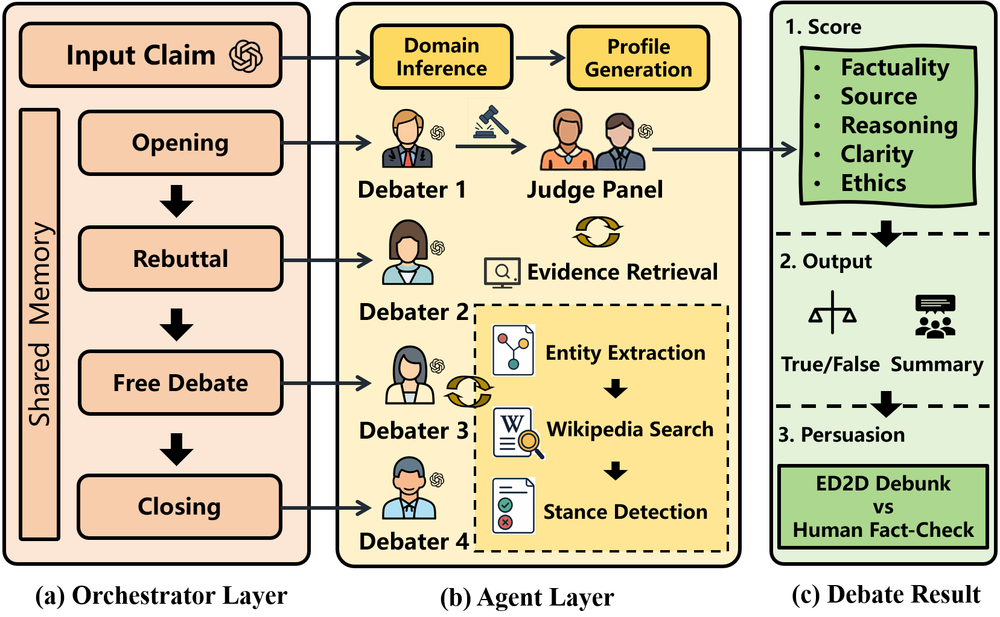

AAAI 2026Oral
Beyond Detection: Exploring Evidence-based Multi-Agent Debate for Misinformation Intervention and Persuasion
Evidence-grounded multi-agent debate for misinformation intervention and persuasion.
Paper
Research details
- Proposed an Evidence-based Multi-Agent Debate (ED2D) framework to address LLM hallucinations by introducing an Evidence Function Call for retrieving external knowledge (Wikipedia).
- Demonstrated that ED2D not only detects misinformation but also serves as a persuasive system to correct user misconceptions.
